世上有多少个缤纷乐园任你行｜陈奕迅《任我行》
来源 · 微信公众号 · 点击阅读摘要
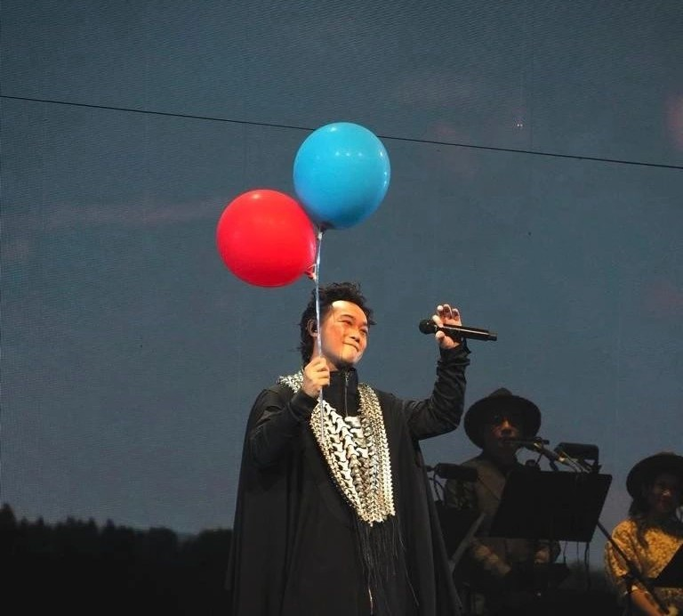
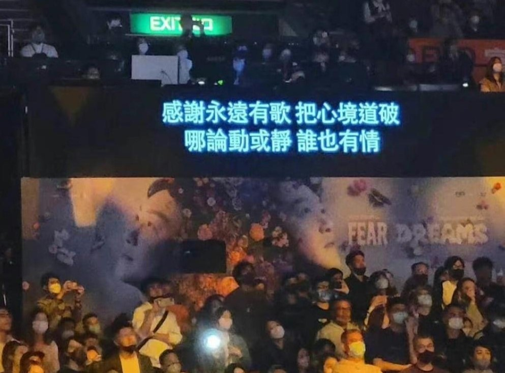
今天适合从一首熟悉的歌开始。
来源 · 微信公众号 · 点击阅读摘要

来源 · 知乎 · 点击阅读摘要
来源 · 简书 · 点击阅读摘要
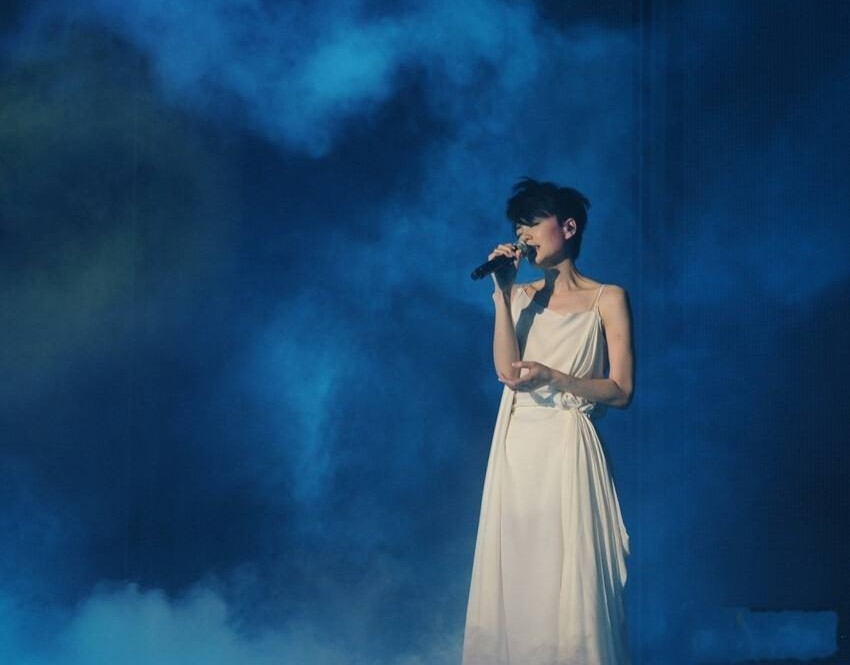
来源 · 豆瓣 · 点击阅读摘要
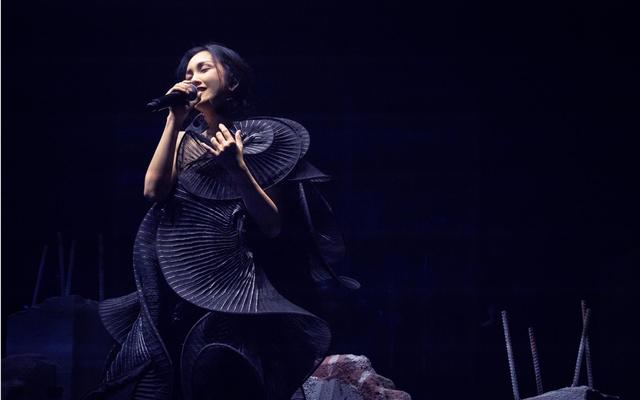
来源 · 知乎 · 点击阅读摘要
来源 · 微信公众号 · 点击阅读摘要
来源 · 豆瓣 · 点击阅读摘要
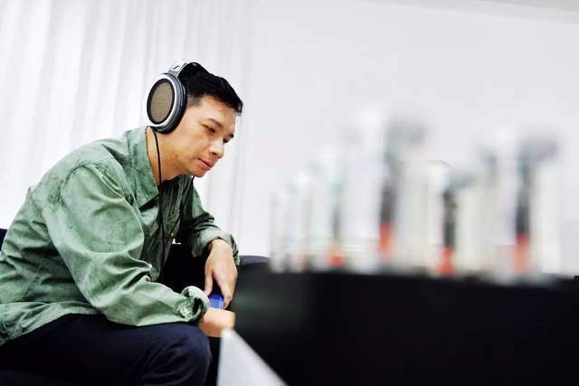
来源 · 微信公众号 · 点击阅读摘要
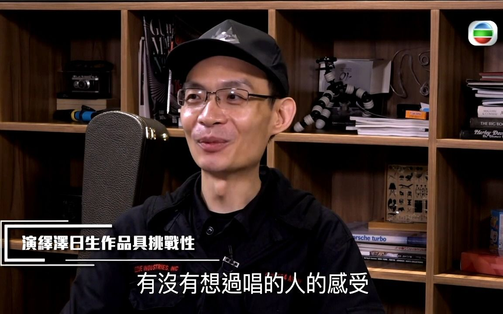
来源 · 哔哩哔哩 · 点击打开现场回顾
来源 · 腾讯视频 · 点击打开现场回顾
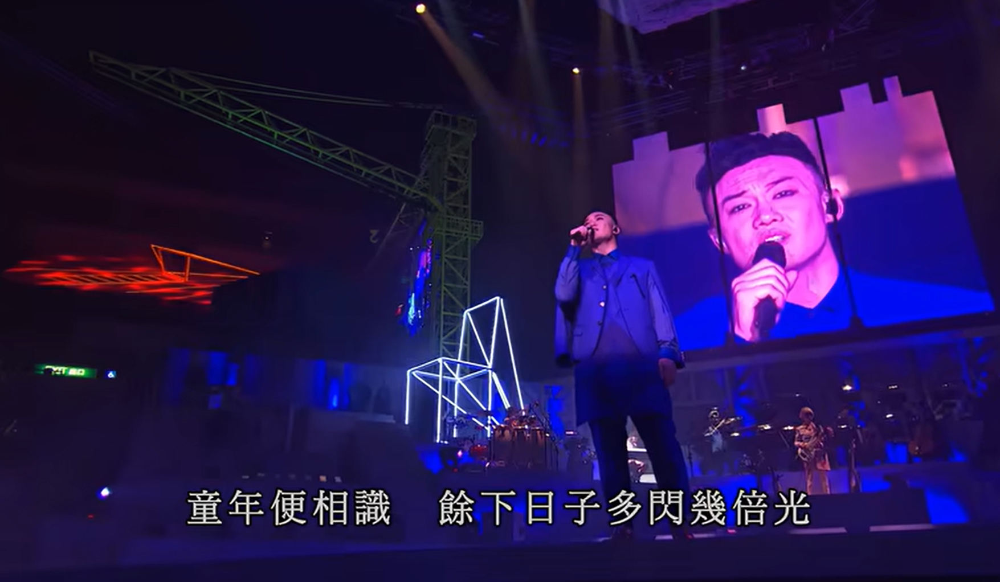
来源 · 哔哩哔哩 · 点击打开现场回顾
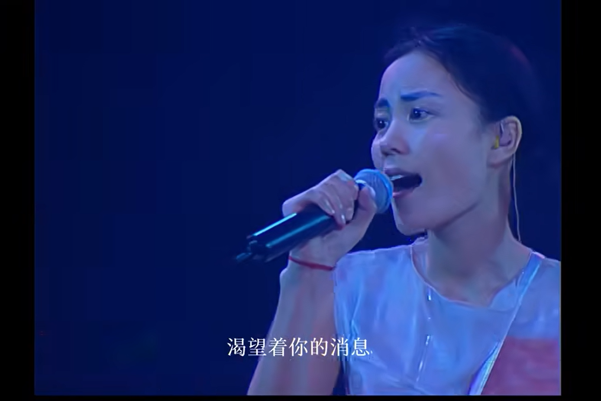
来源 · 哔哩哔哩 · 点击打开现场回顾
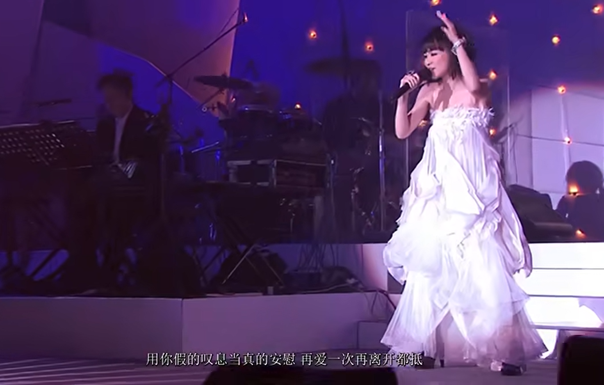
这次现场的氛围太棒了，Eason 唱功还是很稳。
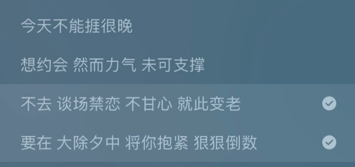
纸张、歌词本和 CD 的质感，是流媒体没有的另一种快乐。
48 首精选覆盖代表作，适合作为第一张陈奕迅精选碟；若你更在意封面、编号或首版版本，建议下单前再向卖家确认品相。
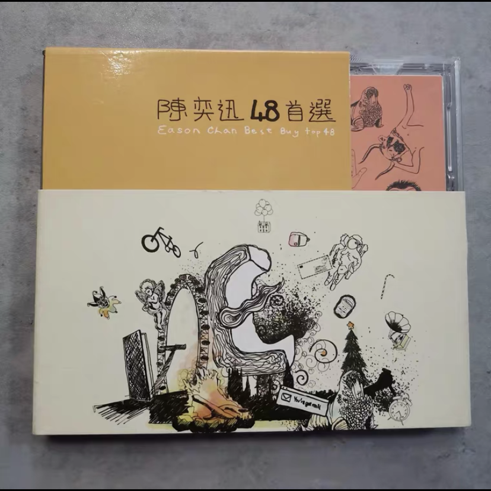
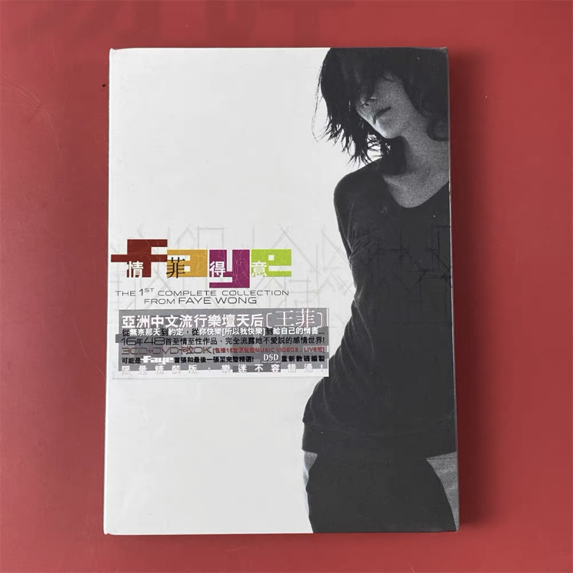
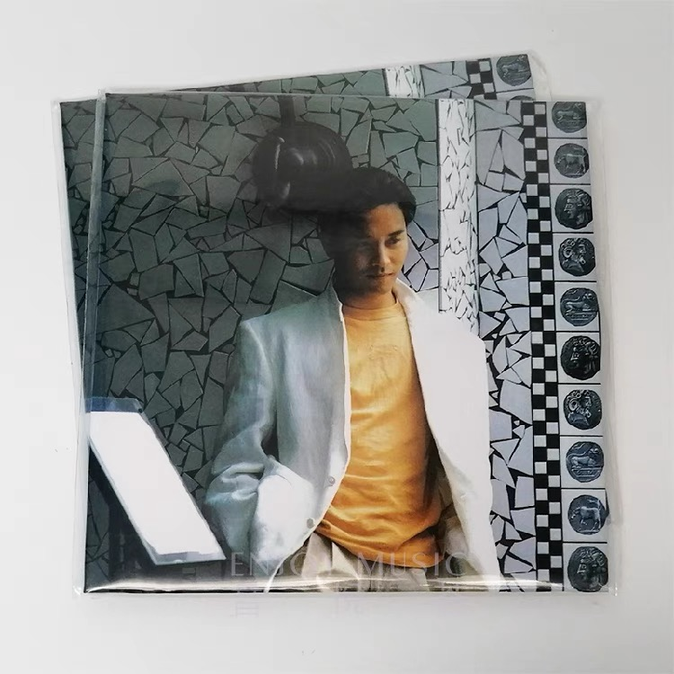
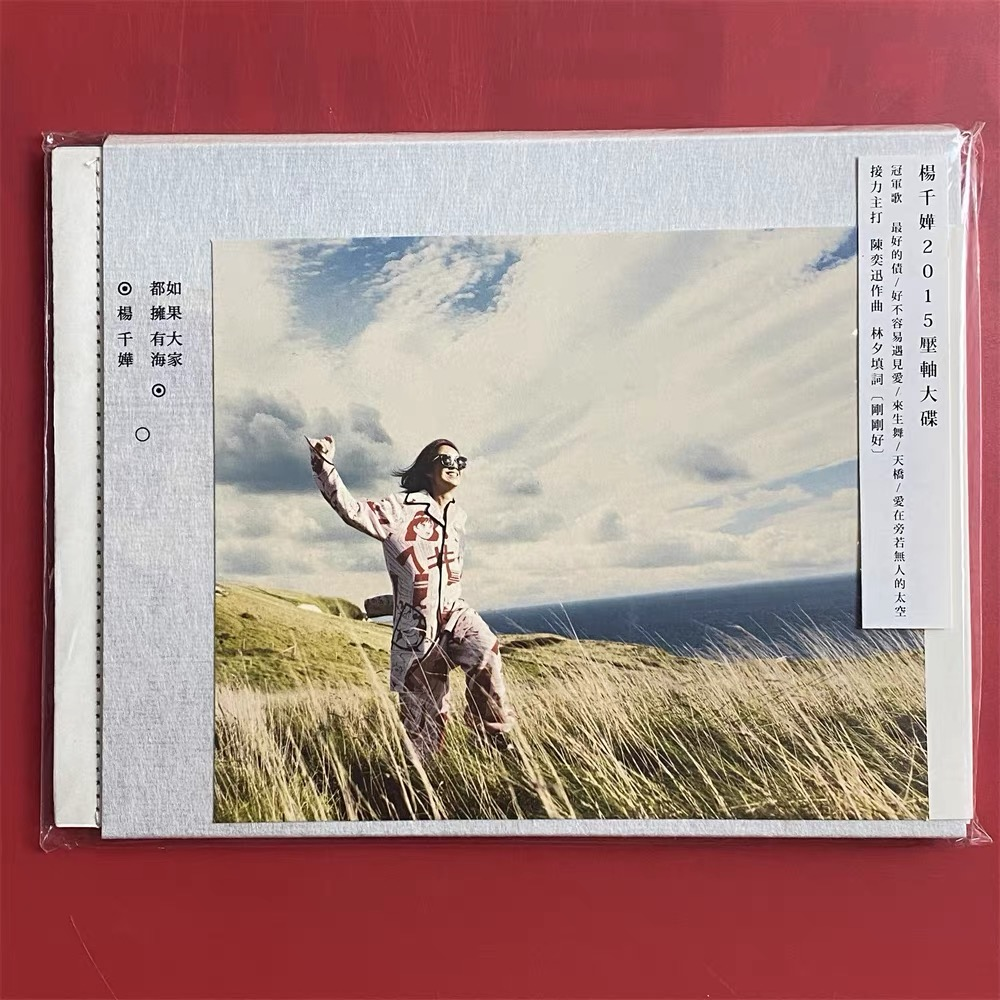
关注 19 · 粉丝 12 · Lv.8
近期由 AI 策展人生成或收藏的港乐路线。
写下一句感受，AI 会按这篇推文的主题补充一个聆听角度。